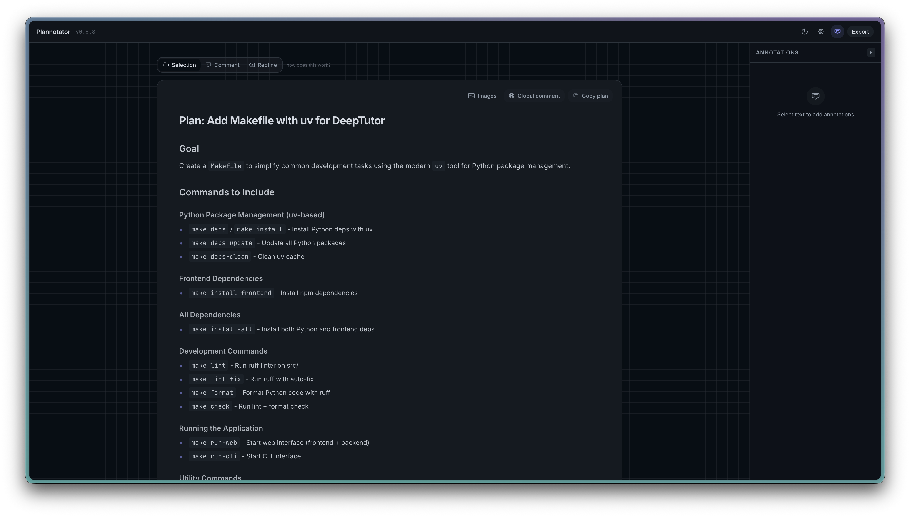

En el medio, muchas veces no leemos lo que genera. Confiamos en que funciona y seguimos.
02 · VIBE CODING4 · EL PROBLEMA DEL 80%
El 80% funciona. El otro 20% es el que duele.
Rápido al principio. Lento después. Cada cambio cuesta más.
↑ velocidad del progreso · tiempo →
POR QUÉ EL ÚLTIMO 20% CUESTA TANTO
Juicio — ¿está bien hecho, o apenas funciona?
Contexto — ¿cómo afecta esto al resto del proyecto?
Edge cases — ¿qué pasa si el usuario hace algo inesperado?
Acumulación — un cambio rompe otra cosa; un fix parchea el síntoma; nadie sabe quién tiene la culpa de qué.
02 · VIBE CODING3.2
Tres deudas que se acumulan.
A — DEUDA DE COMPRENSIÓN
No siempre entendés cómo funciona lo que se generó.
Con el tiempo se acumula. Cada vez entendés menos tu propio proyecto.
B — CÓDIGO FRÁGIL
Anda para el caso feliz. Se rompe en cuanto cambiás algo.
Cada fix agrega complejidad en vez de reducirla.
C — FALTA DE DISEÑO Y ARQUITECTURA
Cada feature se agrega sin pensar cómo encaja con el resto.
Funciona pero no hay un plan. Cada cambio futuro se vuelve más difícil porque no hay estructura debajo.
→ La deuda de comprensión es deuda cognitiva; el código frágil y falta de estructura es deuda técnica.
.
02 · VIBE CODING5 · MODOS DE FALLA
La IA falla convincentemente.
A veces ni se nota que se equivocó — y eso es lo peligroso.
01 — FALSA CONFIANZA
"Parece que está bien, pero no lo está."
"Fixed the login issue" — sigue fallando. Te dice que está listo, lo explica con confianza, y no lo está.
02 — SIEMPRE TE DA LA RAZÓN
Sycophancy: nunca te contradice.
Le preguntás si está bien y te dice que sí. Le proponés una idea mala y te la celebra. No es un revisor — es un asistente entusiasta.
03 — ERRORES EN CADENA
Un problema se vuelve varios.
Asume algo incorrecto → construye encima → parece funcionar → pedís un cambio → choca con la suposición → hay que deshacer varias capas.
04 — FALTA DE JUICIO
Hace de más, o hace de menos.
"Un botón para guardar" → te lo entrega con validación, toast y logging que no pediste. O al revés: el botón está, pero adentro está vacío. No mide qué corresponde.
05 — PÉRDIDA DE CONTEXTO
Olvida lo que ya habías decidido.
Empezaste con una landing, terminaste con un SaaS. No fue un cambio grande, fueron muchos chicos — cada uno parecía razonable.
06 — FALTA DE ESTRUCTURA Y BUENAS PRÁCTICAS
Funciona, pero es un quilombo.
Un archivo de 2000 líneas, nombres que solo tienen sentido en el momento, copia-y-pega en vez de abstracciones. Nadie lo puede mantener — ni vos en dos semanas.
BLOQUE 03
03
Planificar y revisar.
El pasante inteligente · Planificar antes de construir · Revisar antes de aceptar
03 · PLANIFICAR Y REVISAR6.2
Imaginate un pasante que…
Programa muy rápido
Sabe de todo — frontend, backend, bases de datos, diseño
Trabaja 24/7 sin quejarse
Pero no sabe nada sobre tu proyecto ni de vos. No conoce tus decisiones, tus prioridades, ni qué querés lograr.
¿Lo mandarías a "armá un proyecto" y volverías al día siguiente? El problema no es la capacidad — es la dirección.
03 · PLANIFICAR Y REVISAR7 · PLANIFICAR
Planificar antes de construir.
QUÉ ES
Iterar sobre la idea antes de iterar sobre el código.
Decidís el qué y el cómo antes de que la IA escriba una línea. Conversás, ajustás, descartás — todo sin que se acumule deuda.
PARA QUÉ SIRVE
Cambiar de rumbo cuando todavía es gratis.
Sin código, mover la idea no cuesta nada. Con código ya escrito, cada cambio se apila sobre lo anterior y el costo crece rápido.
03 · PLANIFICAR Y REVISAR7.2 · REVISAR
Y revisar antes de aceptar.
Planificar bien no te exime de revisar. La IA escribe rápido — vos sos el filtro. Si no mirás, no es tu trabajo: es el de la IA, con tu nombre arriba.
REVISAR EL CÓDIGO
Leer el diff, no solo aceptarlo.
¿Cambió algo que no pediste? ¿Se agregaron dependencias raras? ¿La lógica se entiende? Si no podés explicar el cambio, todavía no es tuyo. Aceptar sin leer es deuda futura.
REVISAR EL RESULTADO
Mirar la UI, correr el flujo.
Abrir la pantalla, hacer click, probar el caso real. Los tests pasan y la UI puede estar rota igual: alineación, copy, estados vacíos, mobile. Lo que el usuario ve es lo que importa.
03 · PLANIFICAR Y REVISAR7.3 · BUENAS PRÁCTICAS
Algunas formas de planificar mejor.
01 — QUE LA IA TE ENTREVISTE
Grill me: que pregunte hasta entender.
En vez de describirle la idea perfecta, pedile que te entreviste a vos. Dispara preguntas que no habías pensado: edge cases, supuestos, decisiones que evitabas.
"Hacéme preguntas hasta que tengas la spec clara."
02 — EXPLORAR EL CÓDIGO QUE YA EXISTE
Antes de agregar, entender qué hay.
Pedile a la IA que lea el repo antes de proponer nada: convenciones, patrones, archivos relacionados. Así el plan encaja con lo que ya construiste — no choca.
"Mirá cómo manejamos auth hoy y proponé un plan consistente."
03 — INVESTIGAR / TRAER DOCS
Que la IA lea la documentación real.
Para librerías o APIs nuevas, conectarle docs actualizadas (Context7, MCPs de docs) evita que invente firmas o use APIs obsoletas. Investiga antes de proponer.
Context7 · MCPs de docs · web search
04 — DAR REFERENCIAS
"Como X, pero para Y."
Mostrarle ejemplos concretos — un repo, un screenshot, un producto que te gusta — alinea el resultado más rápido que cualquier descripción larga. Anclás el qué y el cómo a algo real.
"Quiero algo parecido a Linear, pero para gestionar X."
03 · PLANIFICAR Y REVISAR7.4 · HERRAMIENTAS
Plannotator.
Una herramienta para revisar planes y diffs antes de aceptarlos.
En vez de aceptar el plan o el diff a ciegas, lo abrís en una vista cómoda — anotás dudas, marcás cambios, y devolvés feedback estructurado a la IA.
Visualiza el plan completo antes de ejecutarlo — y te deja anotar dudas ahí mismo.
Anota líneas del diff con comentarios.
REPO
github.com/backnotprop/plannotator

03 · PLANIFICAR Y REVISAR8.4 · DELEGAR LA REVISIÓN
Subagentes: un segundo par de ojos.
Agente A genera
→
Agente B revisa
→
Reporte
→
Vos decidís
Otro modelo, otro prompt, instrucciones explícitas de buscar problemas. No reemplaza tu juicio — filtra el ruido. Vos te quedás con las decisiones de criterio.
Misma idea que un PR review: el autor está cerca, el revisor llega con ojos frescos.
BLOQUE 04
04
Ingeniería agéntica.
Spec-driven development · Workflow · Skills · Validaciones
04 · ING. AGÉNTICA9 · SPEC-DRIVEN
Spec-driven: el plan, escrito.
Consiste en bajar los aspectos definidos durante el planning en documentos que viven en el repo y describen distintos aspectos del proyecto — un feature, una decisión arquitectónica, un módulo, una integración.
CONSISTENCIA
Sobreviven en el tiempo, describen el estado ideal del sistema.
ITERACIÓN BARATA
Cambiás un doc sin escribir código. Discutís, ajustás, recién entonces implementás.
MENOS SUPOSICIONES
La IA no adivina las decisiones — las lee.
04 · ING. AGÉNTICA9.3 · WORKFLOW
Cómo se ve un flujo de spec-driven development.
SPEC WHAT
→
DESIGN WHY / HOW
→
PLAN STEPS
→
IMPLEMENT EJECUTAR
Definís qué querés, después por qué y cómo, opcionalmente los pasos para la implementación. Recién ahí escribimos el código. Cada artefacto se revisa antes de pasar al siguiente.
04 · ING. AGÉNTICA10 · SKILLS
Skills: conocimiento empaquetado.
Son prompts que encapsulan conocimiento, procesos y herramientas — listos para que la IA los use cuando los necesite. Una vez los escribís, están disponibles siempre, en cada conversación, en cada proyecto.
EJEMPLOS
Standards de código — convenciones, naming, patrones que usamos en este proyecto.
Pasos para debuggear — cómo aislar un problema, qué logs mirar, cómo reproducir.
Cómo hacer queries a la base — qué cliente usar, qué índices considerar, cómo paginar.
04 · ING. AGÉNTICA10.2 · POR QUÉ
Por qué importan.
Dejás de repetir instrucciones — lo que aprendés una vez se aplica solo la próxima.
Conocimiento del equipo, no de una persona — un skill es un proceso del equipo, no algo que sabe sólo el senior.
Componibles — pequeñas unidades que se combinan. La IA elige cuáles aplican.
Crecen con el proyecto — cada vez que descubrís cómo hacer algo bien, lo capturás como skill.
Capturalos donde tengan más sentido — en el repo del proyecto, globalmente en tu config, o como plugins que instalás cuando los necesitás.
Simon Willison: "hoard things you know how to do" — acumular soluciones para combinar y reutilizar.
04 · ING. AGÉNTICA11 · VALIDACIONES
Validaciones: dar feedback rápido para mejorar el output.
Mecanismos automáticos que le dicen a la IA "esto está bien" o "probá de nuevo". Con ese feedback puede iterar sola hasta acertar — sin que vos tengas que revisar cada cambio a mano.
Escribir código
→
Validar
→
¿Pasa? SÍ → siguiente
↘
Leer error
→
Ajustar
Mientras más temprano validás, más barato es arreglar.
04 · ING. AGÉNTICA11.2 · TESTS
Los tests te dicen dos cosas.
01 — CORRECTNESS
Hace lo que tiene que hacer.
No es garantía total — pero mucho mejor que "lo probé una vez y funcionó".
02 — SAFETY NET
Cuando cambiás algo, te avisan si rompiste otra cosa.
Sin tests, cada cambio es un salto al vacío. Modificás, esperás, rezás.
04 · ING. AGÉNTICA11.3 · MÁS ALLÁ
Lo que de verdad cierra el loop.
Más difíciles de configurar — pero la IA pasa de "creo que funciona" a "ví que funciona".
BROWSER TESTING
Que vea el resultado.
La IA abre un navegador headless, navega tu app, toma screenshots, los lee. Detecta cosas que ningún unit test ve — un layout roto, un botón invisible, un overflow.
VISUAL DIFFS
¿Cambió algo que no querías?
Comparás el render contra una baseline. Cualquier diferencia visual aparece — la IA decide si es intencional o regresión.
END-TO-END
El flujo completo.
Recorridos reales del usuario — login, formularios, integraciones. Más caros de mantener, pero atrapan los bugs que más duelen.
Configurar esto cuesta más que un linter. Pero le abrís a la IA un canal de feedback que cambia su forma de trabajar.
CIERRE
05
Cierre.
La idea central · El toolkit
CIERRE11.2 · LA IDEA CENTRAL
De aceptar lo que sale, a dirigir lo que se construye.
La IA sigue escribiendo el código. Vos decidís qué se escribe, cómo se organiza y cuándo está listo.
CIERRE11.3 · HERRAMIENTAS
El toolkit.
Todo lo que pasamos hoy, en una sola página. No tenés que adoptar todo — empezá por el dolor que más te molesta.
PLANIFICAR & REVISAR
Plan mode — separar pensar de hacer
Grill me — que la IA te entreviste
Plannotator — anotar planes y diffs
Subagentes — segundo par de ojos
CONTEXTO
Context7 — docs actualizadas
MCPs de docs — APIs, librerías
Web search — antes de proponer
Referencias — repos, screenshots, "como X"
ING. AGÉNTICA
Spec-driven — spec → plan → código
Skills — conocimiento empaquetado
Standards de código — capturados, no repetidos
VALIDACIÓN
Tests + linters — feedback rápido
Browser testing — que vea el resultado
Visual diffs — detectar regresiones
End-to-end — el flujo completo
CIERRE11.5 · LECTURAS
Si querés meterte más a fondo.
Simon Willison · Agentic Engineering Patterns — patrones prácticos para coding agents